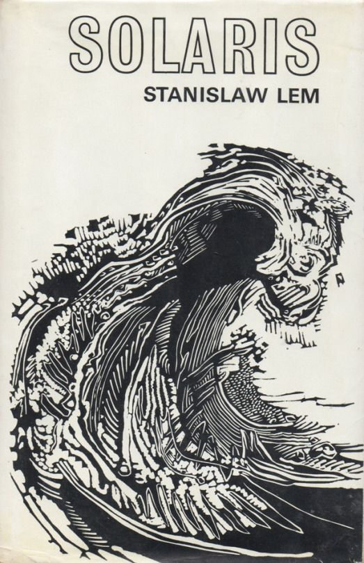

Would aliens understand lambda calculus
Unless you are a sci-fi author or some secret government agency, the question whether aliens would understand lambda calculus is probably not your main practical concern. However, the question is intriguing because it nicely vividly formulates a fundamental question about our formal mathematical knowledge. Are mathematical theories and results about them invented, i.e. constructed by humans, or discovered, i.e. are they eternal truths that exist regardless of whether there are humans to know them?

The question makes for a fantastic late night pub debate, but how can we go about answering it using a more serious methodology? Is there a paper one can read to better understand the problem? Occasionally, a talk or an online comment by a computer scientist comments on this question, but way too often, people miss the fact that the nature of mathematical entities is one of the fundamental questions of philosophy of mathematics. Alas, all those discussions are carefully hidden in the humanities department!
I believe that knowing a bit about philosophy of mathematics is important if we want to have a meaningful debate about philosophical questions of mathematics (sic!) and so I did a talk on this very subject at CodeMesh 2017. This article is slightly refined and hopefully more polished version of the talk for those who, like me, prefer reading over watching. Keep in mind that the question about the nature of mathematical entities is one of the fundamental questions of an entire academic discipline. As such, this article cannot possibly cover all the relevant discussions. Compared to some other writings in this space, this article is, at least, based on a couple of philosophical books that, I believe, have useful things to say on the subject!
Crash course in philosophy of mathematics
Before we get to lambda calculus, I want to discuss four different ways of thinking about mathematical theories. Again, these do not cover all the broad range of ideas that exist in philosophy of mathematics, but they will tell us interesting things about lambda calculus (and aliens!) later in the article.
Platonism and eternal truths
The first idea, going back to Plato, is that the existence of mathematical objects is independent of us, our language, thoughts and practices. In other words, mathematical theories like lambda calculus and theorems exist independently of humans and will continue to exist when all humans (and their textbooks!) are gone. They have an independent existence and we can, through some mechanism discover them.
This is an appealing view. If you follow simple logical steps to derive an idea from basic axioms, it feels that we are simply watching shadows of some true ideal derivations that are free of all human mistakes. This is, however, just a feeling you might (or might not) have about mathematics and there is no way to directly access this world of ideal mathematical entities.
Lakoff and Núñez (2001) refer to this as The Romance of Mathematics and point out some of the sad consequences. The Romance of Mathematics makes a wonderful story, but it intimidates, it helps to maintain an elite, it rewards incomprehensibility. In other words, you either can or cannot see the world of eternal mathematical truths. If no, then bad luck - you probably won't be a mathematician (or a theoretical computer scientist) and our writing is only incomprehensible to you, because you do not see the truths in it.
Mathematics as a social process

When you read a mathematical (or a theoretical programming language) textbook, it gives a few axioms and then proves interesting results that logically follow from the axioms. This orderly presentation is not how mathematics is done. First, what definitions are interesting is a question that depends on the community of mathematicians. In other words, it is a social problem. Second, it often takes some time to get the axioms right so that they cover all intended use cases and allow all proofs that we want.
The process is beautifully documented in Imre Lakatos' Proofs and Refutations, which looks at the Euler characteristic of polyhedra. The polyhedra in the illustration is one of those that break the original formula (because its sides are stars that cross, rather than triangles). To quote Lakatos:
Mathematics does not grow through increase of the number of established theorems, but through improvement by speculation and criticism, by the method of proofs and refutations.
The social side of mathematics is particularly relevant because it helps to explain why the
same thing often appears independently at a similar time (it answers a question that the community cares about)
and how comes that there are isomorphism between remote theories (some of them were adapted and improved to match).
Cultural roots of mathematics
Mathematics is not shaped by social processes, but some aspects of mathematics also depend on our human culture more generally. Lakoff and Núñez (2001) give a couple of examples of how Western culture found its way into the very fabric of mathematics that are also relevant to programming:
-
The idea of an essence goes back to Aristotle. Believing that there is such essence that, somehow, accurately captures the nature of a thing is rooted in our culture and it is perfectly reasonable to imagine that other cultures might not share the concept of essence.
-
The idea of foundations for a subject matter is another culturally rooted concept. The famous Hilbert's program was trying to provide foundations for mathematics. If it was not for our culture, the program would likely not be interesting and influential in the community.
-
The idea that human reason is a form of logic is another idea that goes back to Aristotle. Any form of reasoning about programs using laws relies on this cultural fabric of mathematics.
Theory of embodied mathematics
The book that had the most influence on my talk about aliens and lambda calculus is Where Mathematics Comes From by Lakoff and Núñez. The key idea is that "The only mathematics we know or can know is a brain-and-mind-based mathematics." In other words, if we want to understand the nature of mathematics, we need to look at how it happens in the brain. Of course, we are very far from understanding how the brain works, but cognitive sciences have some interesting results that we can rely on.
This has some important consequences. In particular, the question whether mathematical ideas exists as an independent eternal entities is more a religious question than a scientific one. If they exist and are truly independent, then we have no way of accessing them and all we can do is to believe. In contrast, the theory of embodied mathematics has some concrete scientific methods that we can use to study the nature of mathematics - and perhaps also the nature of programming language theories!
Cognitive science of mathematics

The work on embodied mathematics also tells us interesting things about programming language theory. Moreover, it can be almost directly applied to the question of aliens and lambda calculus, because the central point is that our human brain-and-mind mathematics relies on our human brain-and-mind perception of the world. How would aliens perceive the world and what are the conditions under which they would be likely to develop ideas such as the lambda calculus?
Understanding mathematics through metaphors
The central idea of the theory of embodied mathematics is that metaphors are not just a literary device, but the key to understanding of our thinking. The authors cite results from cognitive science research showing that abstract concepts are understood, via metaphors, in terms of more concrete concepts. In particular:
Many mathematical ideas are ways of mathematicizing ordinary ideas, as when derivatives mathematicize the idea of instantaneous change.
Understanding the derivatives is one thing, but how does one understand more abstract mathematical concepts such as predicate logic, monoids or the lambda calculus? The understanding is constructed using the following components:
-
Innate arithmetic. We are born with some very basic mathematical capabilities. In an experiment on 6 month babies (see image below), researchers remove one toy behind a curtain and measure how long the babies look at the result - they look longer if the unexpected thing happens (because a toy is secretly put back behind a curtain). This suggests that we are capable of basic addition and subtraction of small numbers.
-
Conceptual metaphors. Basic metaphors link different concepts via neural conflation. For example, our innate arithmetic capability of counting to three is linked with real-world ideas such as collections of objects or movement following a line. This allows us to extend the concept of number from just three to numbers appearing in the nature.
-
Layering metaphors. Finally, more abstract mathematical concepts are constructed using layering metaphors that link between multiple metaphorically constructed ideas. This is how we can go, for example, from a number series to a more abstract structure such as a monoid.

How is arithmetic constructed?
How can we discover those metaphors? One way (cheaper than monitoring the brain activity) is to look at the language we use for talking about abstract mathematical entities and real-world entities they arise from. For example, I mentioned that arithmetic can be explained via a metaphor as a collection of objects.

When we say "add onions and carrots to the soup", we are using the word add for working with object collection (things in a soup) and it happens to be the same word we use for addition. This is a metaphorical link! We sometimes say "7 is bigger than 5" rather than greater (even though they are the same size on your screen), because we think of those numbers as collections of objects.
The table from Lakoff and Núñez (2001) illustrates the metaphor. This allows us to create abstract concepts in terms of concrete things that we interact with in the world. Interestingly, the metaphors also give rise to laws. For example, if you have an object collection (soup) and first add onions before adding carrots, it is the same as if you add carrots, before adding onions. This physical property of object collection explains the symmetry of addition. Of course, the metaphors have limits - for example, collection with no objects in it is not really a collection, so this metaphor does not explain zero very well, but there are other metaphors which do.
Lambda calculus is discovered, Angular is invented
Saying that something is discovered suggests that it has a profound structure that would exist without any humans. As discussed before, this is essentially a belief in Platonism. On the other hand, saying that something is invented suggests that the entity is not one of those eternal truths that a Platonist believes in.
Philip Wadler made a remark in one of his talks that lambda calculus and functional languages are discovered while other programming languages are invented (which is why aliens would understand lambda calculus, but not C). How do we know that lambda calculus is discovered? The strongest argument is that the same structure appeared independently in logic, computation and category theory. This is known as the Curry-Howard-Lambek correspondence and I'll say a few words about it before discussing a number of philosophical arguments against this idea.
Curry-Howard-Lambek correspondence
The idea behind the Curry-Howard-Lambek correspondence is that there are corresponding structures in lambda calculus, logic and category theory. This is useful in many ways - for example, you can take ideas from logic and turn them into type system features. As a brief example:
\[\begin{array}{rcccl} \textsf{PROGRAMS} & \Longleftrightarrow & \textsf{LOGIC} & \Longleftrightarrow & \textsf{CATEGORIES}\\ \textsf{type} & \Longleftrightarrow & \textsf{formula} & \Longleftrightarrow & \textsf{object}\\ \textsf{function} & \Longleftrightarrow & \textsf{implication} & \Longleftrightarrow & \textsf{arrow}\\ \textsf{tuple} & \Longleftrightarrow & \textsf{conjunction} & \Longleftrightarrow & \textsf{product}\\ \end{array}\]
Types in lambda calculus correspond to logical formulas and objects in category theory. For example, a tuple \(A \times B\) (which contains values of both \(A\) and \(B\)) corresponds to a formula \(A \,\&\, B\) (which is true when both \(A\) and \(B\) are true) and can be modelled as categorical product. A function \(A \rightarrow B\) matches logical implication \(A \rightarrow B\). If we have a value \(A\), we can call the function and get a value \(B\). If you have a proof of \(A\) and a proof of \(A \rightarrow B\), you can use the Modus ponens rule to derive a proof of \(B\).
I hope you can see why many people find this elegant! Even without understanding all the details, you can see that the structures are similar - you can see that simply from the fact that I can describe corresponding concepts using sentences of a very similar structure. So, why do I have objections against the idea that lambda calculus (and logic and category theory) are discovered?
Philosopher's take: Category mistakes

First of all, even if the Curry-Howard-Lambek correspondence had no problems, it talks about mathematical entities. Programming language theoreticians use lambda calculus as a formal model of computation, but that does not make it a programming language. A programming language is a technical artifact with a compiler (which can have bugs) while formal models are (if we are Platonist) eternal and ideal.
James Fetzer calls this problem a category mistake. He argues that this is why you cannot formally verify a program - because formal proof is a different kind of thing than a computer program. This philosophical analysis upset a number of people working on program verification and you can read the history in Donald MacKenzie's Mechanizing Proof book. In our case, this means that even if lambda calculus was discovered, all programming languages including the most elegant functional languages are invented.
Sociologist's take: Communities and processes
If we consider how the social process of mathematics contributes to the Curry-Howard-Lambek correspondence, it becomes less magical. First, I mentioned Imre Lakatos' Proofs and Refutations earlier. The idea is that mathematical theorems develop and improve over time in order to deal with problematic counter-examples or other new contexts. Could this be the case here? The correspondence is between very specific kinds of theories - you need, simply typed lambda calculus, intuitionistic logic and cartesian closed categories. This does not make it any less interesting useful, but it shows that the correspondence is a result carefully constructed by mathematicians. And our ambition to unify disjoint branches of mathematics that made this work possible is likely a product of our human culture.
There is one more way in which the social process of mathematics contributed to the correspondence. The work on both (modern) formal logic and lambda calculus is a response to Hilbert's program aiming to provide foundations of mathematics. In other words, intuitionistic logic and lambda calculus both developed from the same community, solving the same problem - and so it is not all that surprising that they share notable structural similarities.
Cognitive scientist's take: Embodied experience
Finally, the cognitive science explanation of the correspondence between the three is that they arise from the same embodied experience. Lambda calculus, category theory and logic are abstractions constructed via layering metaphors, based on our experience of living in the physical world. The fact that the three can be linked to each other (through another layering metaphor) follows from the fact that they are largely based on the same embodied experience. What physical experience do we need to construct the lambda calculus?
Where lambda calculus comes from
Lakoff and Núñez (2001) uses the cognitive science framework to explain a number of mathematical ideas including set theory, logic, trigonometric functions and logarithms, but sadly, it does not include the lambda calculus. In this section, I will try to use some of the methods that Lakoff and Núñez introduce to think about lambda calculus, but this is only a sketch to give you an idea how this reasoning might look like.
Container schema
There are at least two fundamental physical experiences that are necessary for the development of the lambda calculus using cognitive metaphors. The first one is the container schema. This is a real-world analogy that lets us construct the set theory and the Modus ponens rule.
If you have a small black object, put it in a glass and then put the glass in a large jug, the small black object will also be in the jug. This is a real world experience analogous to the idea that if you have an object \(x\) which is a member of a set \(A\), then if \(A\) is a subset of \(B\), then \(x\) is also a member of \(B\).

More formally, if \(x\in A\) and \(A \subseteq B\) then also \(x\in B\). Now, if we think of types as sets (which is a frequently used linking metaphor that people use when thinking about types), we can see how the container schema relates to the typing rule for the function application. The structure is very similar. If \(x:A\) and \(f:A\rightarrow B\) then \(f(a):B\). Having a type is like being a set member and subset relation is like function application.
The key idea is that, even something very abstract as the \(\beta\)-reduction rule in lambda calculus is derived, through a series of linking metaphors, from our bodily experience. My explanation using container schema is one attempt - perhaps not perfect - but it follows the general method outlined by Lakoff and Núñez.
Directionality
The reason why explaining lambda calculus in terms of the container schema matters is that it places requirements on what the alien world needs to have in order for the aliens to be able to conceive it. I will get to this when discussing concrete aliens in the next section. Now, there is one more requirement that we can discover through cognitive science methods.
One way of finding metaphors we use is to look at the language we use for talking about mathematical concepts. For example, why is the \(\beta\)-reduction (application) rule called reduction? If you look at the dictionary definition of 'reduce', you'll find that reduce means:
- to bring down to a smaller extent, size, amount
- to lower in degree, intensity, etc.
- to bring down to a lower rank, dignity, etc.
The interesting aspect shared by all these explanations is that they require a sense of directionality. Reduction is a transformation from something larger towards something smaller. Again, this is something that needs to exist in our physical world, otherwise we would likely not be able to construct the lambda calculus!
Would aliens understand lambda calculus?
I used the question whether aliens would understand lambda calculus as a starting point for a discussion about several directions in philosophy of mathematics and the fundamental question of the nature of mathematical concepts. Now that I've done that, it's time to get back to aliens.
Would aliens understand lambda calculus? The answer is that it depends on the aliens. Human-like aliens living in human-like world have a very good chance of coming up with similar ideas, although even they might lack the necessary cultural concepts such as essence and foundations that led human mathematicians to the lambda calculus. However, more interesting aliens might have problems. Let's wrap up with three concrete examples.
Heptapods from Arrival
First concrete aliens we can think about are heptapods from the Arrival movie (based on Story of Your Life, which is still on my reading list...). The aliens in the movie have a language that has a circular nature. The movie plot relies on the Sapir-Whorf hypothesis that language shapes your thinking and your understanding of the world. I can avoid spoilers by saying that this means that heptapods would probably not have the notion of directionality that is needed for the \(\beta\)-reduction rule. What does this mean? Perhaps heptapods would only be able to understand reversible computations, but not the lambda calculus!
The planet from Lem's Solaris
Even more extreme example of an alient that might not understand the lambda calculus appears in the Solaris novel by Stanislaw Lem. To discuss this one, I will need to reveal a bit more, so skip this section if you want to read it! Solaris is a planet covered by an ocean that is a single sentient being.
Would a single planet-scale alien understand lambda calculus? It is quite conceivable that it would lack much more from our mathematics than just the lambda calculus! Given that the ocean from Solaris is just a single being known to it, it might very well only have the number one!
Aliens in a gaseous universe
I don't have a literary reference for my last example (after the talk, a friend recommended Blindsight which is also on my reading list). But imagine alien civilization that lives in a gaseous planet as a swarm. Given the chaotic nature of the atmosphere, such aliens would be able to easily navigate through chaotic environment that is completely unpredictable for us.
However, they might lack many things that are completely obvious to us, such as the container schema. In a chaotic environment on the gaseous planet, there are no discrete boundaries and there is no inside or outside. Similarly, the structure of the mathematics that the gaseous aliens can create would be very different from ours and would hardly include the lambda calculus.
Conclusions
The main point of this blog post was not to argue which aliens would understand lambda calculus and which would not. Instead, my goal is to introduce some of the ideas from philosophy of mathematics that we can use to argue about the nature of mathematical and computer science entities in a more informed manner.
The naive argument that computer scientists often make is that lambda calculus is at the heart of the isomorphism between logic, computation and category theory and this suggests that it refers to some eternal truth. This is a Platonist view of mathematics which is just one of several positions. The main problem with it is that it cannot be tested and so it is more a religious belief than a scientific claim. However, it also ignores the social, cognitive and cultural aspects of mathematical knowledge.
I believe that a more useful way of thinking about mathematical and theoretical computer science entities is to see them as the product of our embodied mind, influenced by the social processes that surround mathematics and, partly, rooted in our cultural heritage. If we think about mathematics this way, we can then find a number of problems that aliens might have when trying to understand the lambda calculus. Especially if we think a bit more creatively about the world in which the aliens might live, or consider some concrete aliens from a good sci-fi book or a movie.
Published: Tuesday, 22 May 2018, 11:27 AM
Author: Tomas Petricek
Typos: Send me a pull request!
Tags: academic, research, programming languages, philosophy